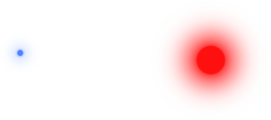
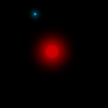

DiMo: The Deconstruction of Falling Stars
Imagine a solitary blue dot.

Unless you let your imagination run away with itself, this is going to be a pretty boring dot. Now, imagine a second, larger dot (you can pick the color).

Red, nice choice! The scene is now slightly more interesting, since now you’ve got two dots to think about. You can ponder their positions, and relative sizes. No motion though; still pretty boring!
Pretty soon, your keen and restless mind will imagine that the larger dot exerts a gravitational pull on the smaller one. The small dot begins moving towards the large one. It’s speed increases exponentially the closer it gets. Now an orbit can form. Thanks, Newton!

The dot’s orbit is reminiscent of a planet orbiting a star. Neat.
Wait, did you see that? You just moved the big dot. Look again! Now there are thousands and thousands of tiny dots, each being accelerated toward the big dot!
Peculiar. The multitude of dots starts to look oddly reminiscent of fluid sloshing around in a container. Or a cloud of gas forming a star. Weird, huh? Maybe they’re the same thing!
Now, before I ramble on any further, let your imagination take a rest while you try out the simulation!
A reasonably recent web browser required. WebGL is required, which means Firefox 4+ or Chrome 9+.
The Premise
Players wave illuminated batons around and cool stuff happens!
See DiMo Comes to Life for a , not-at-all dramatized summary of DiMo.
“DiMo” is a recurring interactive art exhibit at geekSPARK, which is held during SPARKcon each year in Raleigh, NC. This year, I created the particle gravity simulation visualization for DiMo. There was also a visualization of Conway’s Game of Life, and an original game where players eat doritos and spray soda at people who eat doritos.
Particles
The particles’ main job is to swirl around and look cool. They are pulled gravitationally toward the player pieces, but the particles themselves don’t exert gravity on each other.
Gravity
The gravity calculation was written first with inlined calculations, then with ThreeJS vector objects, then with glmatrix, and then inlined again. The inlined code performance wasn’t distinguishable from the glmatrix implementation. Since glmatrix is very fast and much more readable, I stuck with it for a while.
ThreeJS’s vector calculations, on the other hand, were awful. Each function call created a new vector object. Each acceleration calculation caused the creation of 12 vector objects.
10,000 particles *
60 fps *
12 objects *
3 player pieces
---------------------------------
21,600,000 new objects per second
Needless to say, the performance was terrible. I then implemented the gravity
equation using glmatrix’s in-place vector operations. glmatrix’s vector
functions insert their output into an existing vector instead of creating a new
vector for each function call, like ThreeJS’ API does. The number of new
objects created per second by the gravity equation dropped from 21,600,000
down to zero.
glmatrix served quite well for a while, but in the end I improved performance even more by writing an inline gravity equation by hand. Perhaps it was just function call overhead that was hurting performance.
Coloring methods
Once the gravity function was implemented, some beautification was in order.
Originally, each particle was randomly assigned either red, green, or blue.

The gravitational swirls may look kinda cool, but the colors are hectic. This isn’t one of those rare cases where randomness is beautiful. It occurred to me that seeing big swaths of color through all the particles might look better.
Cololololololors
But what criteria should be used to decide what color each particle should receive?
The simplest approach would be to color the particles based on their distance from the players, and that’s essentially what I did. The equations below use each particle’s speed and acceleration to determine what color they should be assigned each frame.
\vec{a} is the acceleration vector, and \vec{v} is the velocity vector. a_{max} is the maximum magnitude an acceleration vector is allowed to have (configurable via the “max accel” parameter in the UI config panel). The decimal constants are there to evenly distribute the waves, and because I was too lazy to figure out the correct fraction to use.
The range of cos and sin are -1..1, but the color values I needed are
0..1. The +1 addition shifts the output into 0..2, and the /2 division
scales it down to 0..1.
When graphed, they look like this.

The cosine allows the colors to cycle repeatedly (R,G,B,R,G,B,…) as the input, n, increases. Here’s the result.

Yes! Swaths of color, cycling through the spectrum like a rainbow.
The Grand Programmers’ Utopia (GPU)
After bumping up against my CPU’s limits while implementing gravity, I was certain of one thing: I wanted to rely on the CPU as little as possible.
I had a vague intuition that pixel shaders were the answer, since, hey, pixel shaders control the colors of pixels, right? It turned out my understanding of shaders was pretty far off, but they are the right tool for the job.
Shaders are small programs that run on your video card’s processor(s) (the “GPU”). They come in a variety of languages, but shaders in WebGL are written in GLSL, a subset of C.
Learning about and writing the shaders was the most fun and educational aspect of this project, mostly because graphics programming is uniquely rewarding among all types of programming. Often an unanticipated quirk of an equation (or even a typo!) will result in a very cool surprise. In short, “just trying stuff” pays off far more than in any other branch of programming.
More than colors?
The more particles I add to the visualization, the better it looks. 1,000 particles just look like a bunch of specks, but 100,000 particles start to look like clouds of swirling vapor. Since the gravity calculations are so demanding, I wanted to offload as much work as possible onto the GPU.
The Web doesn’t currently have an API for doing general-purpose calculations on the GPU (although WebCL is in the pipeline). It is possible to do limited calculations, by doing your calculation in a fragment shader and encoding the results, as pixel color values, into an in-memory texture (FBO).
Sadly, a combination of limited time and inexperience prevented me from getting the gravity calculations onto the GPU.
In 2012, Edouard Coulon created a similar particle gravity simulation called GPU Particle Attractors, using the texture approach, and achieved 1,000,000 particles. Tragically, his website is gone and I couldn’t find his demo hosted anywhere else. Edouard, if you read this, please reach out to me. I’d love to learn from your work.
In the end, I had to settle for 25,000 particles on my laptop. For the art installation, we used a pretty beefy gaming rig, and I was able to bump it up to 50,000 (thanks Charan!).
What’s next?
Here’s my wishlist for further improvements to the visualization.
- do gravity calculations on the GPU, which would enable either…
- several orders of magnitude more particles, or
- particles can exert gravity on each other
- add a calibration system which would determine how many particles a user’s computer is capable of rendering
- adjust the canvas sizing code, to allow the visualization to be easily embedded in other pages (it currently full-screens itself)
- add even more configuration parameters and presets. DiMo is capable of a nice range of effects and patterns, but many of them require nitpicky tweaking of sliders
More likely, I’ll use what I learned from DiMo on a super-secret future project.